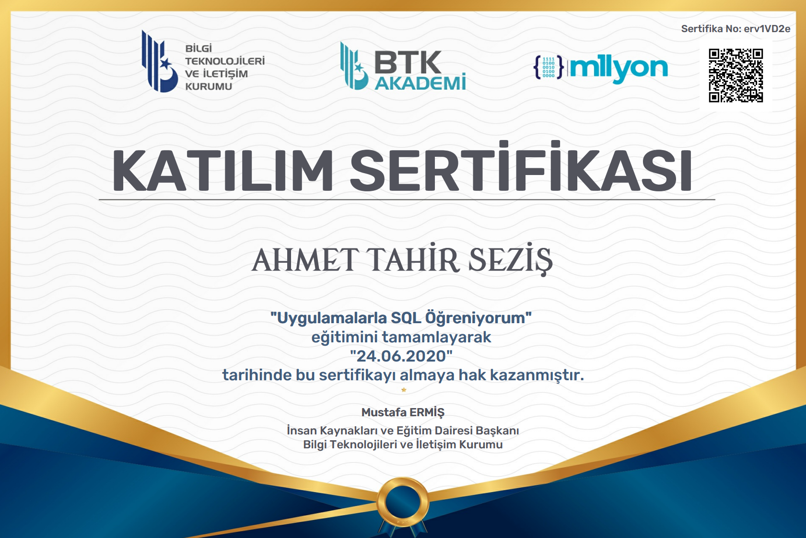

Ahmet Tahir Seziş
Son Güncelleme: 5.10.2022Kişisel Bilgiler
13.03.1998
Merkez / DÜZCE
ahmettsezis@gmail.com
Telefon Gizlenmiştir
Eğitim Bilgileri
• Manisa Ahmet Tütüncüoğlu İlköğretim Okulu • Manisa Dündar Çiloğlu Anadolu Lisesi (2012-2016)
• Düzce Üniversitesi / Bilgisayar Mühendisliği (2017-2022)
Yetkinlikler
HTML / CSS
Docker
Kubernetes
Python
Amazon Web Services
Google Cloud
Çalışma Geçmişi
01/2022 > 09/2022
• Türk Telekom A.Ş. - Veri Depolama ve Yedekleme Operasyonları Stajyeri
01/2022 > 09/2022
• WINGIE | ENUYGUN Group - DevOps Engineer
Projeler
• AWS Altyapısında Telegram Botu
AWS EC2 sanal makine üzerinde, Jenkins tetiği ile Github’dan çekilen ve Docker imajı oluşturulan konteynerize Python kodu kullanılarak
bir web sayfasındaki veriyi AWS DynamoDB üzerine yazıp, bu veriyi Telegram botuyla
paylaşan proje.Detaylar: https://medium.com/@ahmettsezis/i%CC%87lk-bulut-projem-2ddc7e4653b • WINGIE ENUYGUN DevOps Bootcamp Projesi Google Cloud’da Terraform ile Kubernetes Cluster kurulumu. Kubernetes üzerine Wordpress ve MySQL kurulumu. Jenkins kullanarak yeni Wordpress’ler kurdurulması.
Detaylar: https://github.com/ahmettsezis/enuygunbootcampproject/blob/main/ProjectDocumentation.pdf • http://bilgisayarsec.site/ (yayında değil) Kullanıcıya sorular sorarak belirlediği kriterlere uygun masaüstü bilgisayarın parçalarını gösteren ve HTML görüntüsünü PDF uzantılı çıktısını veren web sitesi projesi. • MQTT Tartışma Platformu Python ve Tkinter arayüzü ile kullanıcıya sunulan web forumu benzeri, fakat iletişimi MQTT protokolü ile sağlayan PostgreSQL veritabanlı tamamen localhostta çalışan tartışma platformu projesi.
Sertifikalar


